MANAGER 사용자 가이드
- MANAGER 권한을 가진 사용자가 PaaSXpert 를 사용하는 방법을 설명한다.
1. 최초 로그인 하기
- MANAGER 사용자가 최초 로그인 시 비밀번호를 변경하는 방법을 설명한다.
- 최초 로그인 시 초기 비밀번호를 필수 변경해야 한다.
1. 관리자에게 받은 사용자 ID 와 초기 비밀번호로 로그인을 시도한다.
2. 최초 로그인 이기 때문에 비밀번호 변경 팝업이 표시된다.
3. 변경할 비밀번호를 두 번 입력하고 저장 버튼을 클릭하여 작업을 완료한다.
- 비밀전호 형식은 대소문자 구분하여 숫자, 특수문자 조합, 12자 이상 조건을 준수한다.
2. 소스 저장소 관리
- PaaSXpert 포털에서 소스를 현상관리하기 위한 Git 조직 및 저장소를 생성하고 조회하는 방법
을 설명한다.
2.1. 소스 저장소 생성
- 생성한 Git 조직에 소스 저장소를 생성한다.
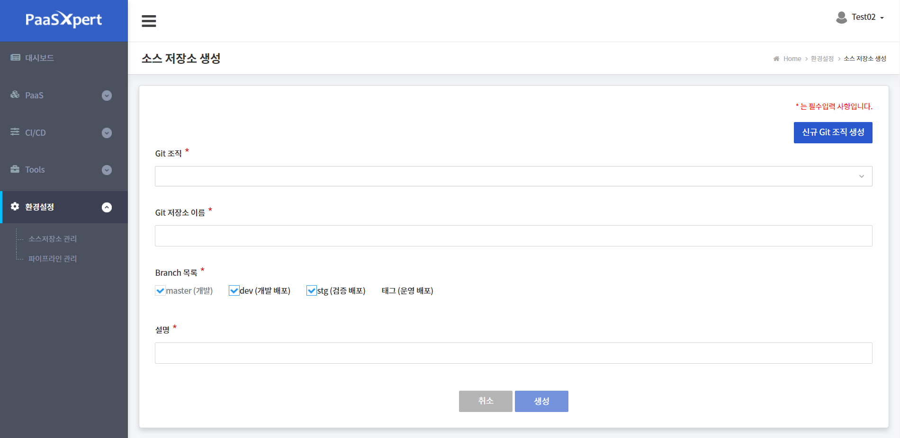
1. 환경설정 > 소스 저장소 관리 > 소스 저장소 생성 메뉴를 클릭한다.
2. 소스 저장소 생성 화면에서 생성한 Git 조직을 선택하고 Git 저장소 이름과 설명 그리고 Branch
목록 선택 입력한다.
| 항목 | 설 명 | 비고 |
|---|---|---|
| Git 조직 | Git 조직 목록 접근 가능한 조직 목록만 조회된다. |
|
| Git 저장소 이름 | 선택한 Git 조직 하위에 생성되는 Git 저장소 이름으로 Git 조직내에서는 유일한 값이어야 한다. | |
| Branch 목록 | 생성할 Git 저장소의 Branch 목록을 선택한다. | |
| 설명 | Git 저장소에 대한 간단한 설명 |
4. 생성 버튼을 클릭하여 작업을 완료한다.
Note: 소스 저장소 생성 결과 Git 의 브랜치가 master, dev, stg 가 생성된다.
운영 배포는 stg 브랜치에 prd 태그로 입력된다.
2.2. 신규 Git 조직 생성
- 소스 저장소를 그룹별로 관리하기 위한 Git 조직을 생성한다.
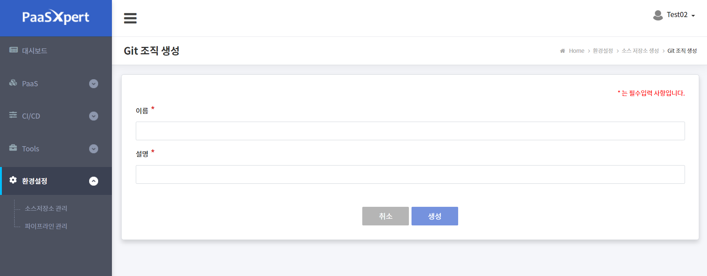
1. 환경설정 > 소스 저장소 관리 > 소스 저장소 생성 메뉴를 클릭한다.
2. 소스 저장소 생성 화면에서 신규 Git 조직 생성 버튼을 클릭한다.
3. Git 조직 생성 화면에서 이름과 설명을 입력한다.
| 항목 | 설 명 | 비고 |
|---|---|---|
| 이름 | Git 조직 이름 유일한 값이어야 한다.(영문자만 입력가능) |
|
| 설명 | Git 조직에 대한 간단한 설명 |
4. 생성 버튼을 클릭하여 작업을 완료한다.
2.3. 소스 저장소 조회
- 생성한 조직 별 소스 저장소를 조회한다.
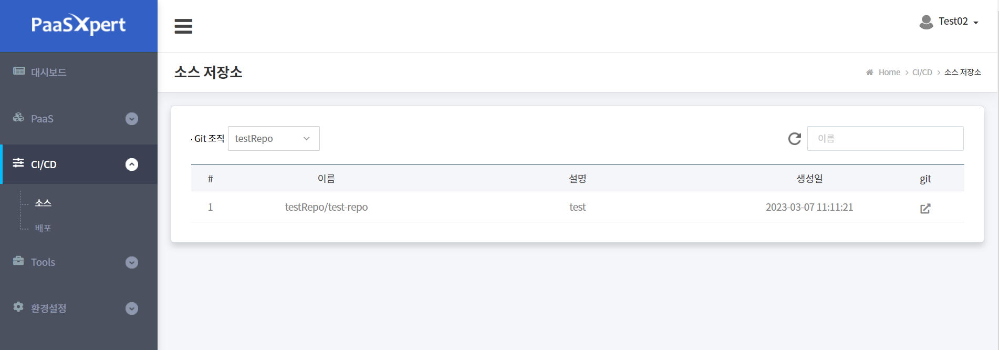
1. CI/CD > 소스 메뉴를 클릭한다.
2. 조회 조건 중 조직 목록을 선택하여 소스 저장소 목록을 조회한다.
| 항목 | 설 명 | 비고 |
|---|---|---|
| 이름 | Git 소스 저장소 이름 | |
| 설명 | Git 저장소에 대한 간단한 설명 | |
| 생성일 | Git 저장소 생성 일자 | |
| Git | 해당 Git 저장소 gitea 페이지로 이동한다. |
2.4. 소스 저장소 권한 관리
-
사용자를 Git 조직 별 소스 저장소에 매핑하는 방법을 서명한다.
-
Git 조직 별 팀은 Git 내부적으로 Owner/Developer 팀으로 구성되며, PaaSXpert 의 MANAGER
권한은 Git의 Owners 팀으로 PaaSXpert의 USER 권한은 Git 의 Developers 팀으로 매핑 된다.
1. 환경설정 > 소스 저장소 관리 메뉴를 클릭한다.
2. 소스 저장소 권한 화면에서 조회 조건 중 조직 목록을 선택하여 사용자를 조회한다.
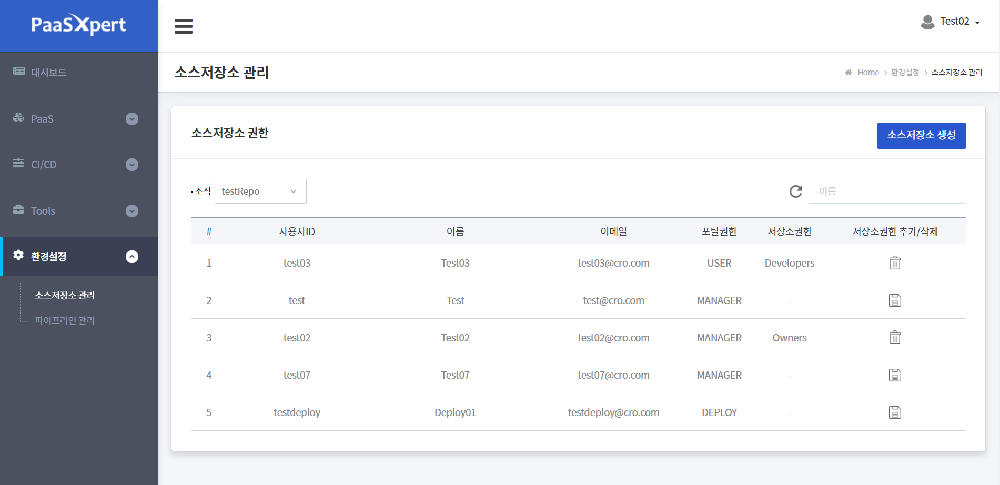
| 항목 | 설 명 | 비고 |
|---|---|---|
| 사용자 ID | 사용자 ID | |
| 이름 | 사용자 이름 | |
| 이메일 | 사용자 이메일 | |
| 포털권한 | 해당 사용자 포털권한 명 | |
| 저장소권한 | 해당 저장소 권한 명 | 없을 시 '-' |
| 저장소권한 추가/삭제 버튼 | - 추가: 소스 저장소 사용자 등록 - 삭제: 소스 저장소 사용자 삭제 |
3. 권한을 추가, 삭제하려는 사용자에 대해 추가 또는 삭제 버튼을 클릭한다.
추가 버튼을 클릭하면 Git 조직에 해당 사용자가 PaaSXpert 의 MANAGER 권한은 Git 의
Ownesr 팀으로 PaaSXpert 의 USER 권한은 Git 의 Developers 팀으로 등록된다.
삭제 버튼을 클릭하면 Git 조직에서 해당 사용자가 삭제된다.
저장소 권한이 '-'가 아닐 시에만 Git 소스 저장소를 사용할 수 있다.
3. 파이프라인 관리
- PaaSXpert 포털에 CI 도구를 이용하여 파이프라인을 보다 쉽게 생성하고 빌드 및
어플리케이션 배포 관리까지 할 수 있는 방법을 설명한다.
3.1. 파이프라인 생성
- 배포를 위한 파이프라인을 생성한다.

1. 환경설정 > 파이프라인 관리 메뉴를 클릭한다.
2. 파이프라인 조회 화면에서 파이프라인 생성 클릭 > git 조직을 선택 > repository (소스 저장소)를
선택한 후 git credential 목록에서 값을 선택한다.
| 항목 | 설 명 | 비고 |
|---|---|---|
| git repository | Git 조직과 하위 소스 저장소(repository) 선택 Git 조직을 선택하면 하위 소스 저장소가 표시된다 |
|
| git credential | Git 시스템 계정을 선택한다. |
3. 다음 버튼을 클릭하여 파이프라인 정보 입력 단계로 이동한다.
| 항목 | 화면 |
|---|---|
|
|
| 기본 정보 | 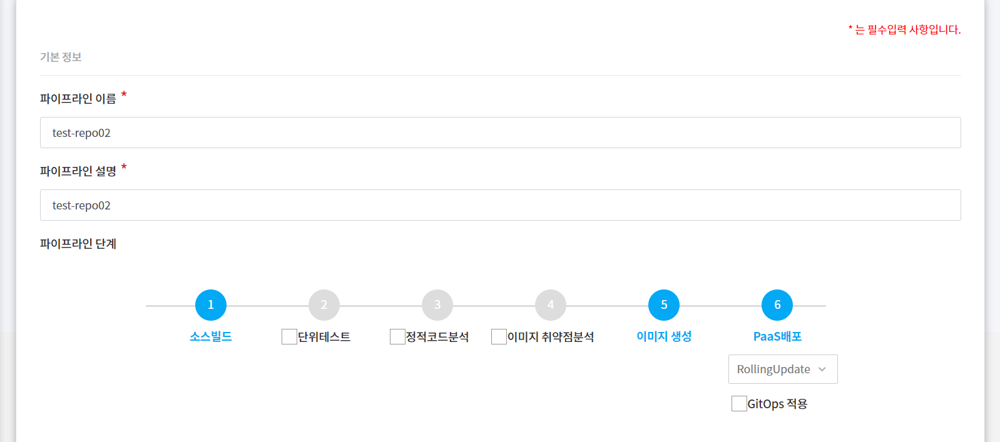 |
| 빌드 정보 | 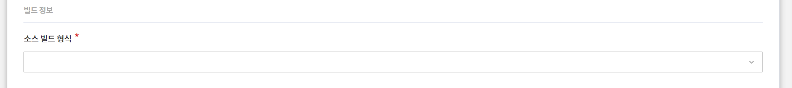 |
| 배포 어플리케이션 정보 |
|


4. 파이프라인 정보 입력화면에서 파이프라인을 만들기 위해 기본정보, 빌드 정보,
배포 어플리케이션 정보를 입력한다.
| 구분 | 항목 | 설 명 |
|---|---|---|
| 기본 정보 | 파이프라인 이름 | 파이프라인 이름 전체 파이프라인에서 유일한 이름이어야 한다. |
| 파이프라인 설명 | 파이프라인에 대한 간단한 설명 | |
| 파이프라인 단계 | ||
| 빌드 정보 | 소스 빌드 형식 | 소스 코드에 따른 빌드 방법 정의한 템플릿 - tomcat-war: HTML, Js 등의 정적 소스, war 소스 압축 - spring-boot-maven-jar: Spring Boot 자바 소스 형식, jar 소스 압축 - spring-boot-gradle-jar: Spring boot gradle 소스 형식, jar 소스 압축 - python-nginx-uwsgi-django: Python 소스 형식, 압축 없음 |
| 배포 어플리케이션 정보 | 배포 application name | 실제 PaaS 에 재포되는 어플리케이션 이름이 됨 |
| Docker registry url | 도커 이미지 저장소 주소 기본 지정됨 (수정 가능) |
|
| Docker registry credential | 도커 이미지 저장소 시스템 계정 선택 | |
| Service port | 도커 컨테이너 서비스 포트 기본 8080 (수정 가능) |
5. 다음 버튼을 클릭하여 PaaS 선택 단계로 이동한다.
| 항목 | 화면 |
|---|---|
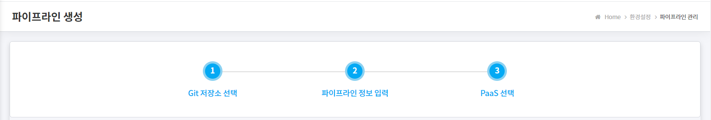 |
|
| 개발 배포 | 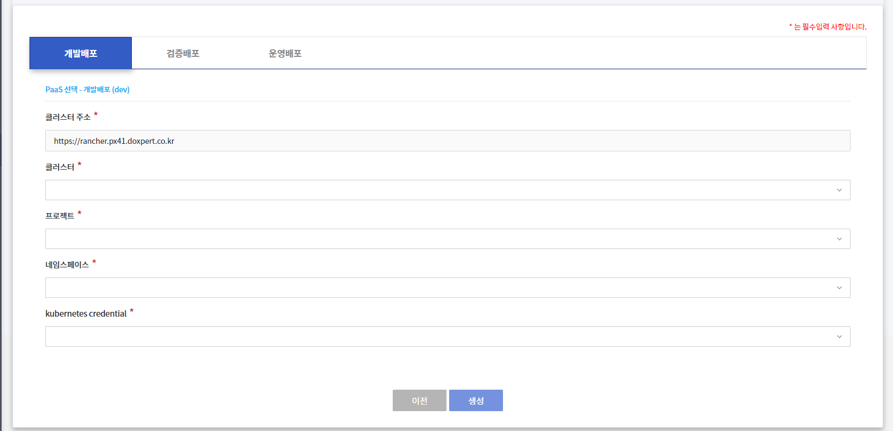 |
| 검증 배포 | 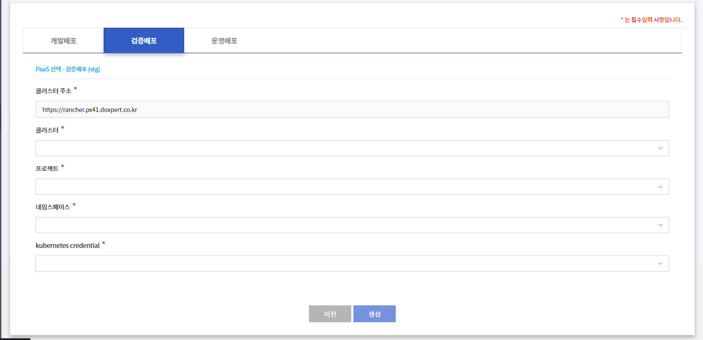 |
| 운영 배포 | 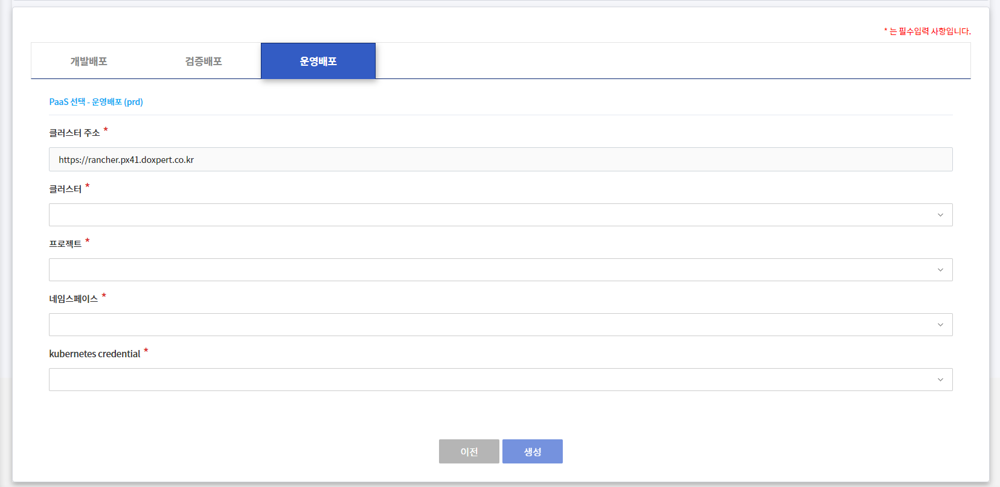 |
6. PaaS 선택 화면에서 어플리케이션이 배포될 위치를 지정하기 위해 배포 영역별(개발,검증,운영)로 PaaS 정보를 입력한다.
| 구분 | 항목 | 설 명 |
|---|---|---|
| DEV(개발)/STG(검증)/PRD(운영) 동일 | 클러스터 주소 | PaaS(Kubernetes) 주소 (수정 불가) |
| 클러스터 | 사용자 클러스터 권한에서 지정한 클러스터 선택 | |
| 프로젝트 | 클러스터에 해당하는 프로젝트 선택 사용자 클러스터 권한에서 지정된 것 클러스터를 먼저 선택해야 프로젝트 선택 가능함 |
|
| 네임스페이스 | 클러스터의 프로젝트에 해당하는 네임스페이스 사용자 클러스터 권한에서 지정된 것 프로젝트 머저 선택해야 네임스페이스 선택 가능 |
|
| kubernetes credential | PaaS(Kubernetes) 시스템 계정 |
7. 생성 버튼을 클릭하여 작업을 완료한다.
Note: 파이프라인 생성 결과 개발 배포용 파이프라인, 검증 배포용 파이프라인 그리고
운영 배포용 파이프라인 3개가 생성된다. 또한 소스 저장소(Git)에 파이프라인 관련
설정 파일들이 생성 된다.
3.2. 파이프라인 조회
- 생성한 파이프라인을 조회 및 빌드, 삭제할 수 있으며 Jenkins 링크를 통해 별도의 로그인 없이
해당 파이프라인을 Jenkins 에서도 조회할 수 있다.
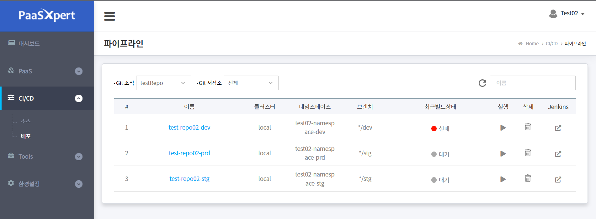
1. CI/CD > 배포 메뉴를 클릭한다.
2. 파이프라인 조회 화면에서 조회 조건중 Git 조직과 저장소를 선택하여 조회한다.
Git 조직과 저장소는 파이프라인 생성시 Git 저장소 선택 단계에서 입력한 조직과
저장소의 동일한 정보 이다.
| 항목 | 설 명 | 비고 |
|---|---|---|
| 이름 | 파이프라인 이름 클릭 시 해당 파이프라인 상세탭으로 이동 | |
| 클러스터 | 파이프라인을 사용하여 PaaS 에 배포할 Git 의 소스 브랜치 명 |
|
| 네임스페이스 | 해당 파이프라인 빌드시 배포될 네임스페이스를 나타낸다. | |
| 브랜치 | 해당 파이프라인의 Git 저장소 브랜치를 나타낸다. | |
| 최근빌드상택 | - 정상 - 실패 - 중지 - 대기 |
|
| 실행 | 해당 파이프라인 실행 버튼 해당 파이프라인 실행 권한이 있어야 실행 가능하며 권한이 없으면 권한 없음 팝업창이 노출 된다. |
|
| 삭제 | 해당 파이프라인 삭제 버튼 해당 파이프라인 삭제 권한이 있어야 실행 가능하며 권한이 없으면 권한 없음 팝업창이 노출 된다. |
|
| Jenkins | Jenkins 솔루션 링크 아이콘 |
3. 파이프라인 목록에서 Jenkins 링크를 클릭하면 Jenkins 솔루션 화면이 열린다.
4. Jenkins 화면에서 해당 파이프라인을 확인할 수 있다.
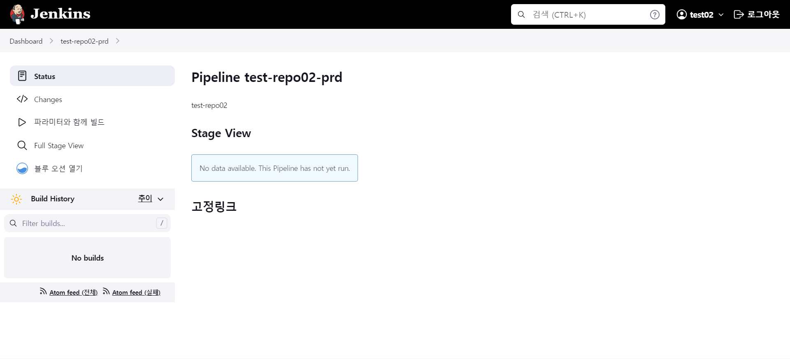
3.3. 파이프라인 실행
- 생성한 파이프라인을 통해 빌드, 배포를 할 수 있으며 실행 권한은 해당 파이프라인을 생성한
MANAGER 사용자와 DEPLOY 사용자만 가능하다.
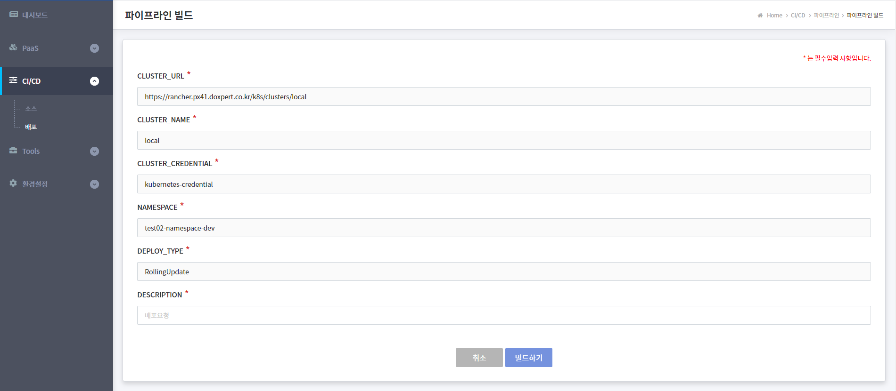
1. CI/CD > 배포 메뉴를 클릭한다.
2. 파이프라인 조회 화면에서 조회 조건중 Git 조직과 저장소를 선택하여 조회한다.
3. 파이프라인 목록 중 생성한 파이프라인을 확인하고 실행 버튼을 클릭한다.
4. 파이프라인 빌드 화면에서 입력된 정보를 확인한다.
| 항목 | 설 명 | 비고 |
|---|---|---|
| CLUSTER_URL | PaaS 클러스터 주소 (수정불가) | |
| CLUSTER_NAME | PaaS 클러스터 명 (수정불가) | |
| CLUSTER_CREDENTIAL | PaaS 클러스터 시스템 계정 (수정불가) | |
| NAMESPACE | PaaS 네임스페이스 (수정 불가) | |
| DEPLOY_TYPE | 어플리케이션 배포 형식 (수정 불가) | |
| DESCRIPTION | 해당 빌드의 설명을 작성한다. |
5. 빌드하기 버튼을 클릭하여 작업을 완료한다.
6. 빌드 결과 확인 을 위해 파이프라인 조회하면으로 이동하여 결과를 확인한다.
3.4. 파이프라인 삭제
- 생성한 파이프라인을 삭제할 수 있으며 삭제 권한은 해당 파이프라인을 생성한 MANAGER 사용자만 가능하다.
1. CI/CD > 배포 메뉴를 클릭한다.
2. 파이프라인 조회 화면에서 조회 조건중 Git 조직과 저장소를 선택하여 조회한다.
3. 파이프라인 목록 중 생성한 파이프라인을 확인하고 삭제 버튼을 클릭한다.
4. 삭제 팝업 화면에서 OK 버튼을 클릭하여 파이프라인 삭제 작업을 완료한다.
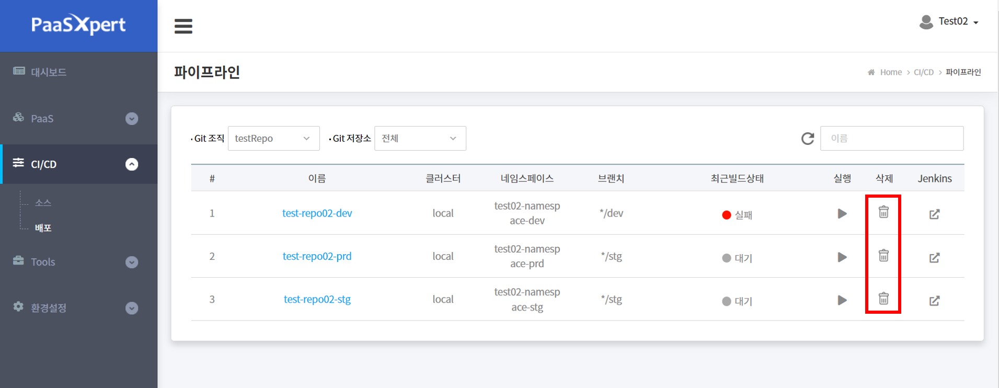
3.5. 파이프라인 이력 및 빌드 로그 조회
수정필요 - 파이프라인 빌드를 수행하여 배포한 이력 및 로그를 조회한다.

Note:
설명 = 저장소 이름
1. CI/CD > 배포 메뉴를 클릭한다.
2. 파이프라인 조회 화면에서 조회 조건중 Git 조직과 저장소를 선택하여 파이프라인 목록을 조회한다.
3. 파이프라인 목록 중 이력을 조회할 파이프라인의 이름을 클릭한다.
4. 배포 이력 화면에서 빌드 목록을 확인한다.
| 항목 | 설 명 | 비고 |
|---|---|---|
| 상태 | - 정상 - 실패 - 대기 - 중지 |
|
| 빌드ID | ||
| 수행시간 (시:분:초) | ||
| Git (브랜치,commit) | ||
| 이미지 tag | ||
| 설명 | ||
| 완료일 |
수정필요
5. 빌드 ID 를 클릭한다.
6. 배포 이력 화면에서 빌드 상태 및 실행 로그를 조회한다.
| 항목 | 설 명 | 비고 |
|---|---|---|
| 파이프라인 단계 | - 상태: 정상/실패/중지/대기 - 빌드 ID: 빌드 이력 일련번호 - 단계: 소스 빌드 형식별 빌드 단계를 표시하며, 정상/실패 여부 확인할 수 있다. |
|
| 실행 로그 | 파이프라인 실행 상세 로그 |
- 언어별 빌드 단계
| 소스 빌드 형식 | 단계 | 비고 |
|---|---|---|
Note: 빌드가 실패했을 경우 모든 단계가 표시되지 않고 중간에서 종료된다.
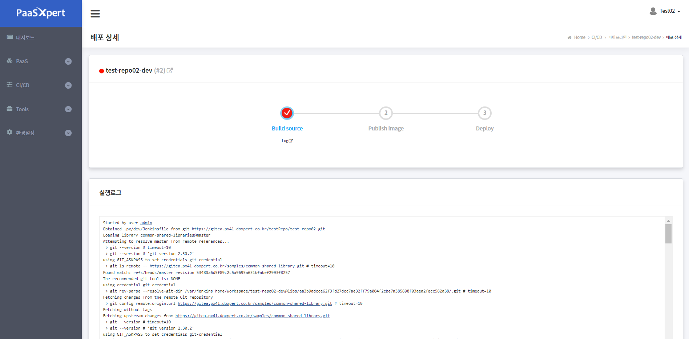
4. 소스 관리
- Git 소스코드를 상세 조회할 수 있는 Gitea 솔루션으로 링크하는 방법을 설명한다.
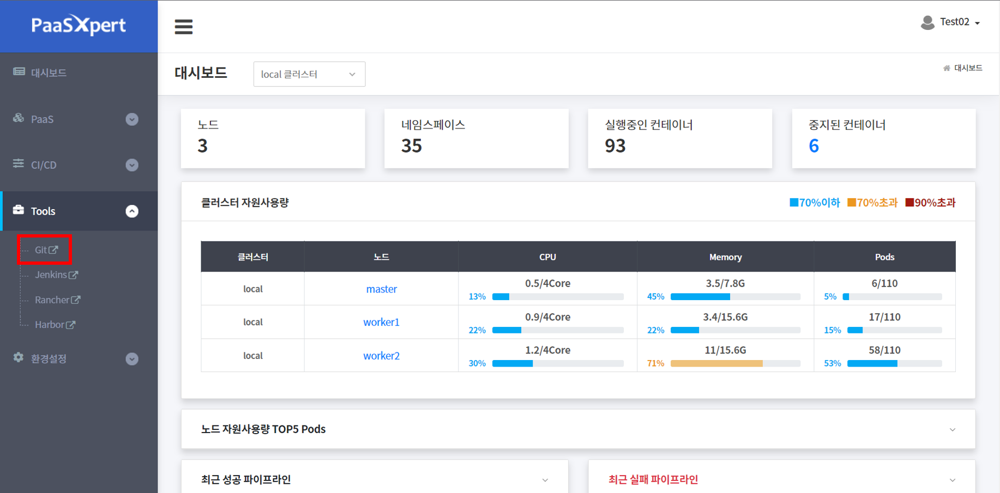
1. Tools > Git 메뉴를 클릭한다.
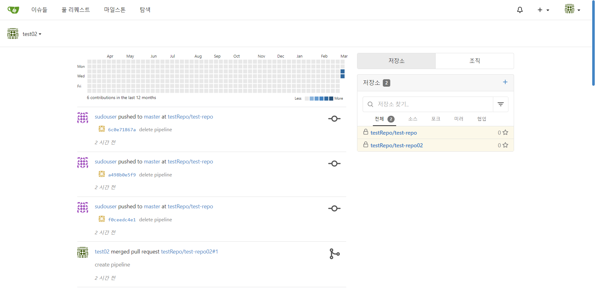
2. PaaSXpert 에서 접속중인 사용자와 같은 계정으로 Gitea 에 자동적으로 접속 되는것을 확인 할수 있다.
Note: PaaSXpert 사용자 계정 생성시 솔루션에도 같은 ID와 password의 계정이 생성되게 된다.
3. Gitea 대시보드 화면에서 오른쪽 저장소 탭에 권한이 있는 소스 저장소 목록이 표시된다.
4. 소스 저장소 이름을 클릭하면 해당 소스 저장소로 이동한다.
5. 클러스터 관리
- USER 사용자 가이드 >
6. PaaS 관리하기
- 파이프라인을 통해 PaaS에 배포한 어플리케이션 및 서비스 메쉬 정보를 조회하는 방법을 설명한다.
6.1. 워크로드 조회
- PaaSXpert 포털은 PaaS 에 배포된 어플리케이션의 워크로드 목록을 조회할 수 있다.
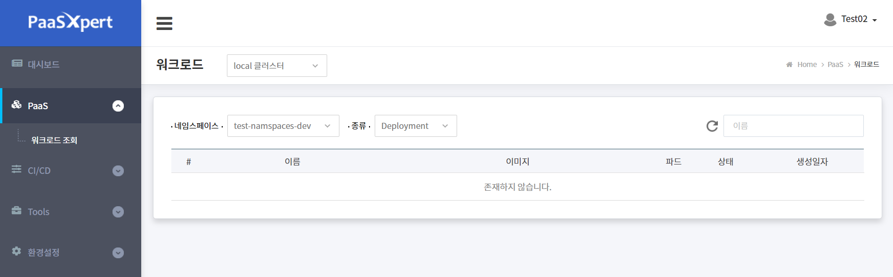
1. 네임스페이스와 조회할 리스트 종류를 선택한다.
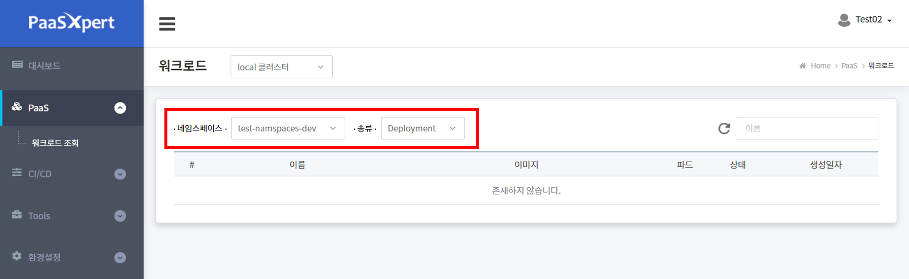
2. 찾고자 하는 이름을 검색한다. ( 선택사항 )
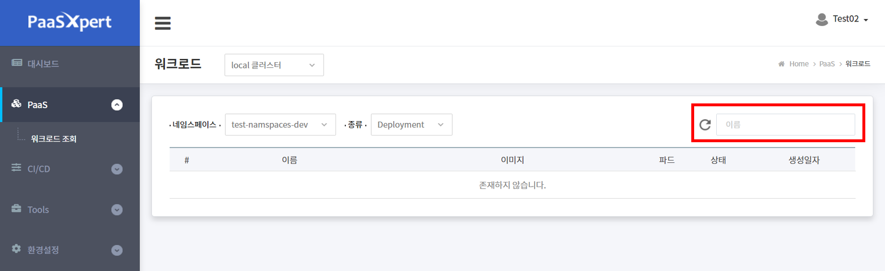